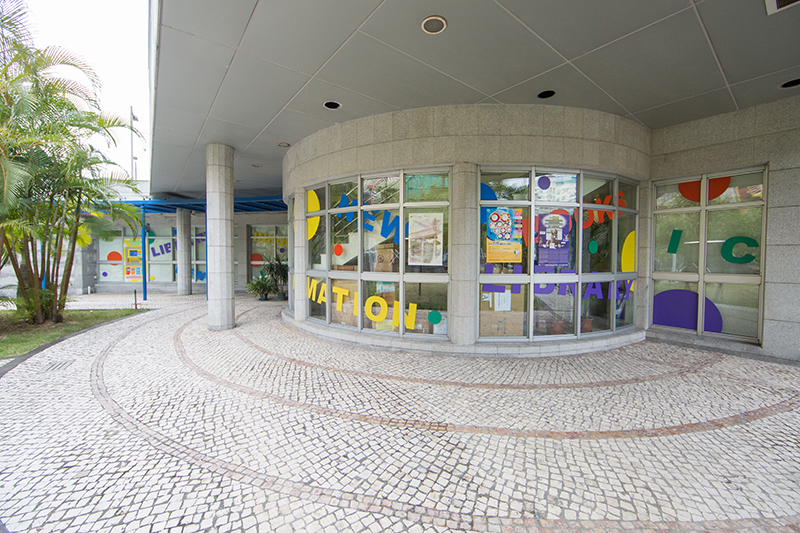

於1993年對外開放，2005年為了配合新口岸區的重整計劃暫停開放，重建後於2009年2月10日再次投入服務。
新館總面積為368平方米，同樣位於何賢公園內，共有兩層，第一層為閱報區及影音資料區，第二層為閱覽室。藏書12,473冊，影音資料80件，各地報紙52種，各類雜誌147種，閱覽座位75個。
Recommand
驚人習慣力 : 做一下就好!微不足道的小習慣創造大奇蹟
編著者： Guise, Stephen


於1993年對外開放，2005年為了配合新口岸區的重整計劃暫停開放，重建後於2009年2月10日再次投入服務。
新館總面積為368平方米，同樣位於何賢公園內，共有兩層，第一層為閱報區及影音資料區，第二層為閱覽室。藏書12,473冊，影音資料80件，各地報紙52種，各類雜誌147種，閱覽座位75個。
驚人習慣力 : 做一下就好!微不足道的小習慣創造大奇蹟
編著者： Guise, Stephen